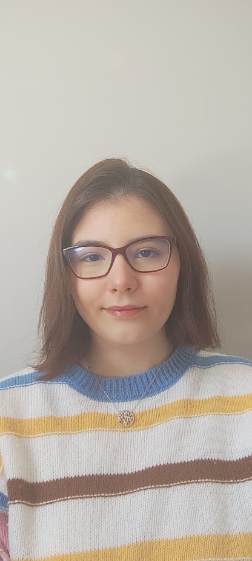
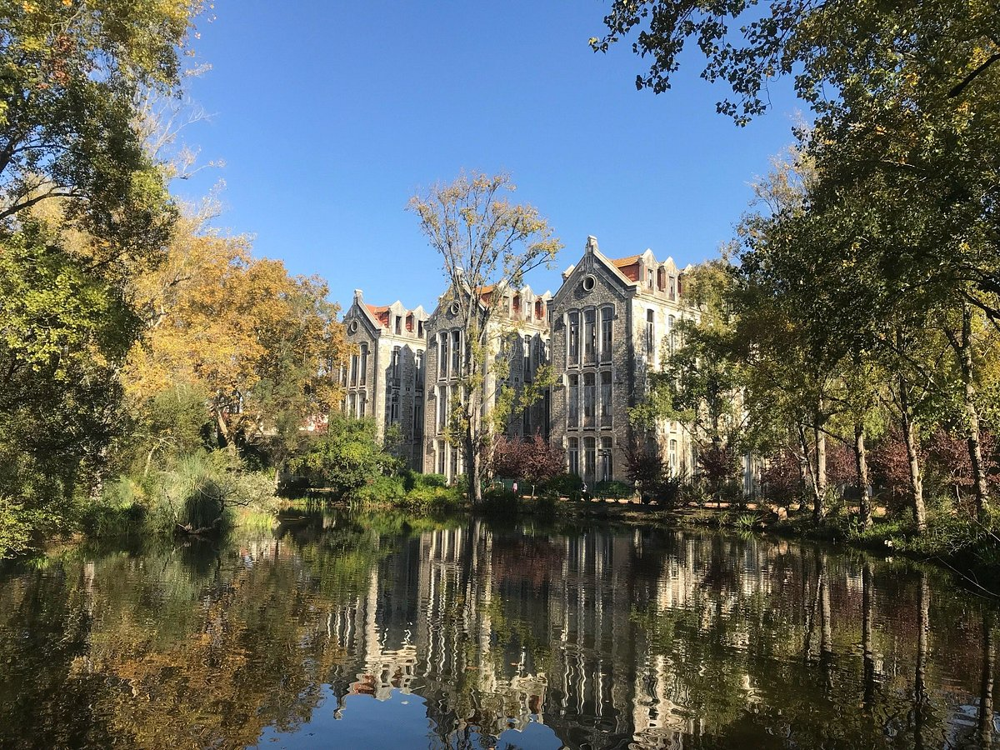

Engenheira Informática | Full-Stack Developer | React Software Engineer | Full-Stack Developer | React
Engenheira Informática apaixonada pelo desenvolvimento de software, com especial foco em tecnologias web. Tenho um enorme gosto por criar interfaces dinâmicas e reativas em React e desenvolver arquiteturas robustas de backend. Sou uma profissional dedicada e proativa, em busca de oportunidades 100% remotas onde possa contribuir para equipas inovadoras, aplicando os meus conhecimentos em Full-Stack e continuando a evoluir num ambiente tecnológico estimulante e ágil.
Software Engineer passionate about software development, with a special focus on web technologies. I deeply enjoy building dynamic and responsive interfaces using React and developing robust backend architectures. I am a dedicated and proactive professional seeking 100% remote opportunities where I can contribute to innovative teams, applying my Full-Stack expertise and continuing to grow in a fast-paced, agile environment.
Ver Simulação
View Simulation

Caldas da Rainha
(A minha base remota)
Caldas da Rainha
(My remote base)
Tomar
(Onde me formei)
Tomar
(Where I graduated)